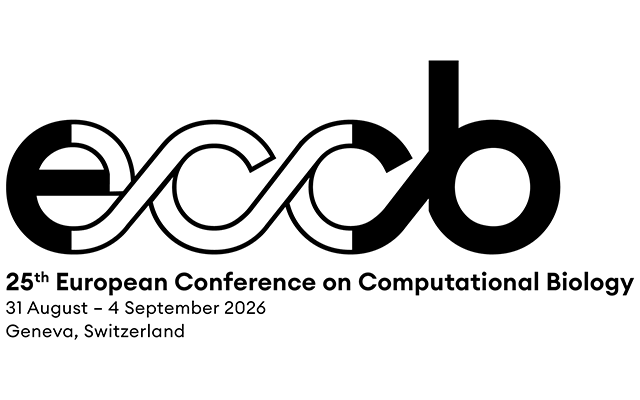
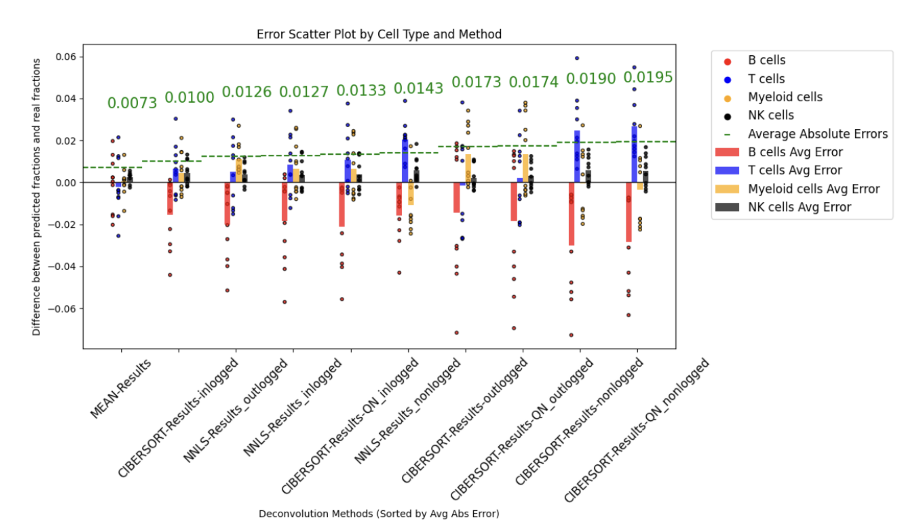
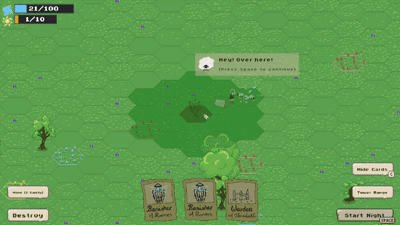

Research & Engineering Projects
High-Dimensional Signal Deconvolution (Thesis) [View Code]
Grade: 5.5/6
- Pioneered a Python/R machine learning framework for proteomic deconvolution, benchmarking adapted state-of-the-art models against custom algorithms to predict cell-type composition.
- Achieved a 57.3% reduction in Mean Absolute Error (from 4.86% to 2.08%) by engineering a novel randomized algorithm modification, enabling models to effectively process highly variable, 10'000-dimensional data.
- Architected a reproducible, end-to-end ML pipeline to support downstream personalized oncology research.
- Published Poster Presentation: Co-authored benchmarking research accepted for presentation at the European Conference on Computational Biology (ECCB 2026).
Scheithauer, T., Sibilia L., Herold, M., Gair, S., et al. (2026). "Benchmarking Deconvolution Tools for Proteomics Data". [Conference Website]


- Engineered end-to-end Retrieval-Augmented Generation (RAG) pipelines in PyTorch and Hugging Face, building context-retrieval mechanisms (based on sBert embeddings and TF-IDF scores) to mitigate model hallucinations and answer accuracy.
- Fine-tuned a 1.5B-parameter LLM (Qwen2.5) for mathematical reasoning using a Reinforcement Learning approach (Direct Preference Optimization) and LoRA, and implemented self-consistency decoding and calibration metrics (ECE) to evaluate and improve model accuracy on the GSM8K dataset.
Deep Generative Modelling and Representation Learning [View Code]
Top 10% Class Award
- Implemented PyTorch deep generative models (Variational Autoencoders) to learn highly compressed latent representations (embeddings) increasing the utility and performance of NNLS regression and semi-supervised classification on noisy and high dimensional RNA data (RMSE: 0.077).
- Optimized the classification model with an unsupervised domain adaptation pipeline to align shifted data distributions, using KNN graph-clustering achieving a 0.79 ARI score.
Multi-Domain Explainable AI (XAI) and Model Reliability [View Code]
- Built interpretable risk-prediction models (Neural Additive Models, MLPs) for tabular data, mapping non-linear feature attributions via SHAP and partial dependence curves.
- Ensured visual model reliability by developing CNNs with Grad-CAM for spatial pixel explainability and executing label-shuffling to audit against dataset memorization.
AI Security Engineering
- Executed PyTorch-based model-inversion attacks to reconstruct prompts from CLIP text embeddings, achieving > 0.99 cosine similarity to bypass vision-language safety filters.
- Developed stochastic local search algorithms against REST APIs to optimize adversarial token suffixes, successfully evading statistical LLM watermarks (p-value detection).
Game Development with Object-Oriented Architecture [View Code]
- Architected a highly scalable, object-oriented simulation environment in C#, managing real-time entity states and pathfinding algorithms in game loops.
- Designed and implemented custom graph algorithms for dynamic pathfinding and spatial optimization, ensuring high-performance execution and efficient memory management.

Low-Level Systems & Concurrency
- x86 Virtual Memory Simulator (C): Engineered a paging simulator mapping multi-level page table translations (PML4, PDP, PT) and managing CR3 hardware register interactions. [Code]
- Concurrent Resource Management (Java): Built a thread-safe traffic simulation system utilizing ReentrantLock, semaphores, and monitors to prevent deadlocks under high concurrency. [Code]
Time-Series Deep Learning and Transformers
- Engineered imputation-free Transformers in PyTorch to process highly irregular (t, z, v) measurement triplets, automating sparse feature extraction pipelines with tsfresh.
Education
ETH Zürich
MSc Computer Science (Major: Machine Intelligence, Minor: Data Management Systems)
Sep 2025 – Jul 2027
ETH Zürich
BSc Computer Science (Grade: 5.75/6)
Sep 2022 – Jul 2025
Relevant Coursework: Advanced Machine Learning, Large Language Models, Reliable and Trustworthy AI, Probabilistic AI, Computational Intelligence Lab, Big Data, Data Modelling and Databases, Parallel Programming, Systems Programming and Computer Architecture, Numerical Methods for Computer Science.
Skills & Technologies
Machine Learning & AI: Python, PyTorch, Transformers, Scikit-learn, XGBoost, NumPy, Pandas, SciPy, tsfresh, R, Apache Spark, Hadoop
Systems & Engineering: C/C++, Java, SQL, Unix/Linux, NoSQL
Experience & Details
ETH Computer Science Library Assistant
December 2024 – Present
- Managed computer science literature, provided technical book recommendations, and directed library social media.
Languages: English (native) | German (native) | French (B2) | Polish (B2)
Interests: Volleyball (Stäfa team captain 2021) | Bassist in a jazz band